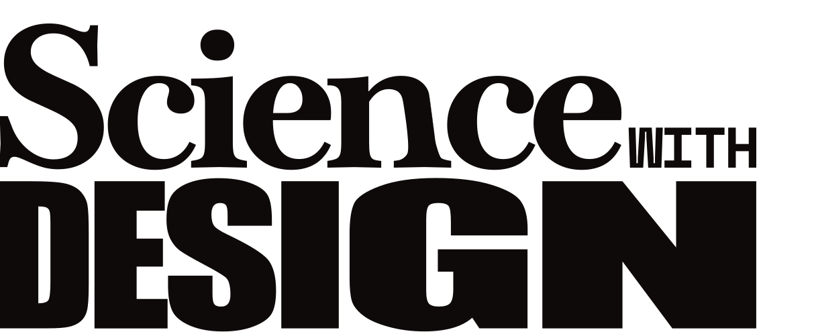
A site for modern science communication
We spread your research with curated designs & scientific illustrations that spark curiosity while safeguarding the truth.
Let’s beginFor starters, you can have a look at some covers
It’s about lighting up the curiosity by luring the eyes into discovery
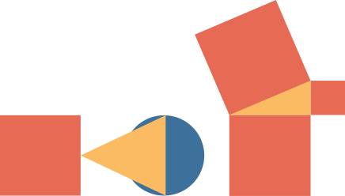
+ science communication & illustration formats
diverse tools to reach your specific audience. We offer a broad variety of human-crafted designs of scientific information. Visuals with clarity and rigor for education, social awareness, outreach and engagement
-
Infographics
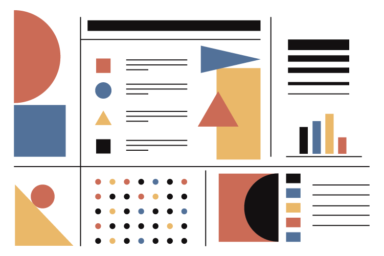
-
Illustrations
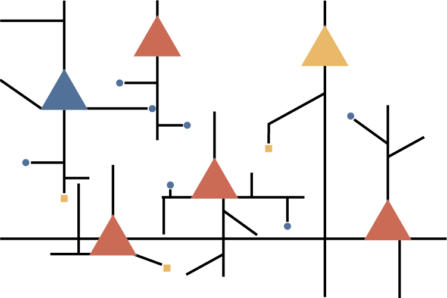
-
Data visualization
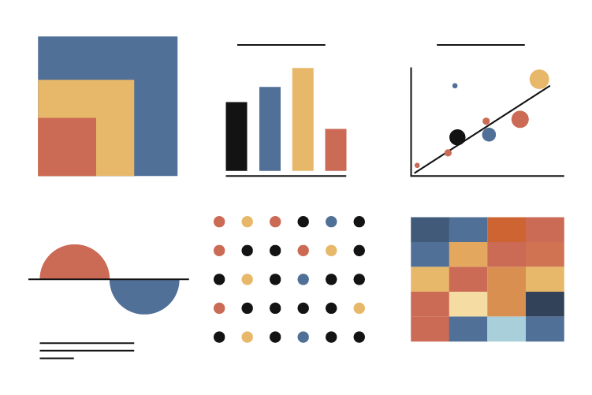
-
Presentations
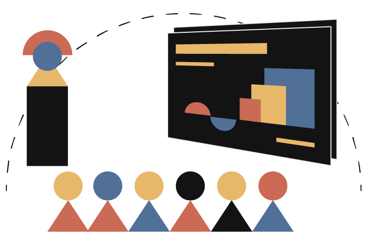
-
Scrollytelling articles
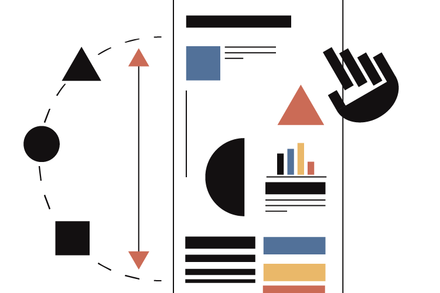
-
Lab branding & web design
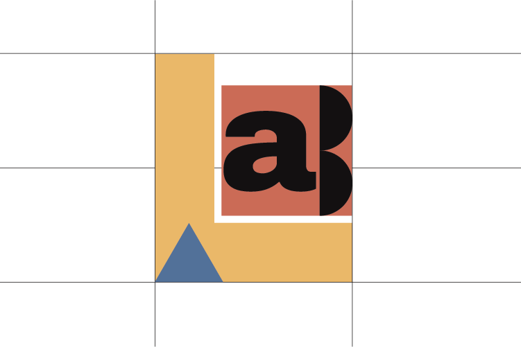
-
Thesis covers
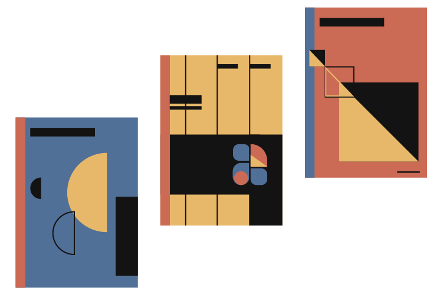
-
Printed materials
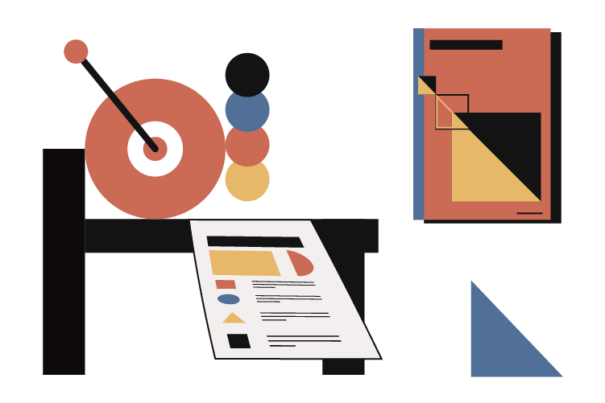
-
Workshops
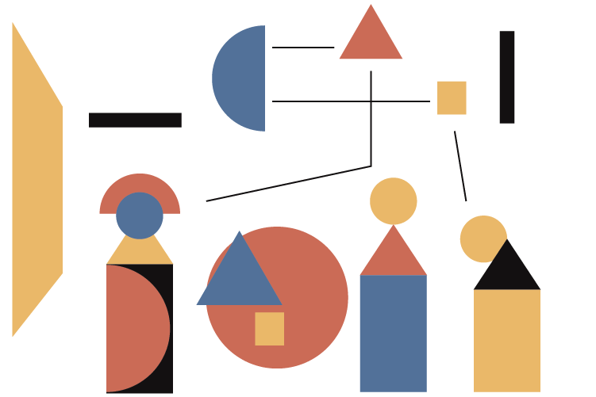
A collaborative workflow
Finding a good solution is just a matter of talking, really. In ScienceWithDesign we believe that when several minds put their thoughts into creating something together, results get so much better. We want to listen to your ideas. We want to know the basis of your research, its goals, its limits, the cool experiments, the human stories behind. It will be a creative process, so it will be fun. But it will be a process of design, so we will aim it at fulfilling a goal. We’ll also learn a lot.
We want to make sure that our designs
respect the integrity of the scientific information.
So yep, we are here to understand your needs and offer an original, bold and creative way to share your science with the world!
Scientific
rigor
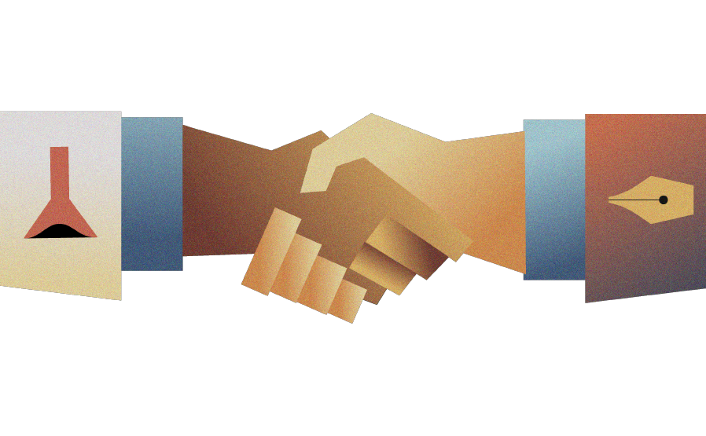
Clear
visuals
these firms and persons have tried already applying design thinking to science comm :P